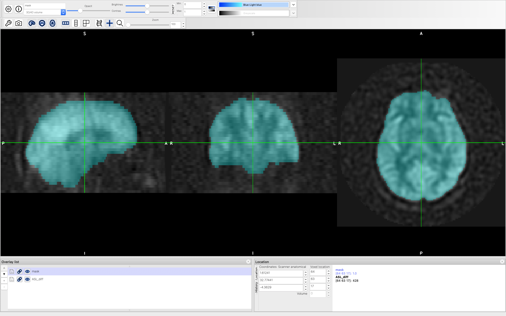

ASL Data Pre-processing¶
Introduction¶
Our ASL data contains the label/control difference and proton density M0 images, sufficient for quantifying CBF in absolute units (ml/100g/min). Before we perform quantification, we need to pre-process the data to
1 create a registration between the T1-weighted structural and ASL space
2 create an analysis mask in ASL space
3 compute the mean signal of the ASL label/control difference image
4 compute the equilibrium magnetization of the arterial blood (M0 blood)
Registration between T1-weighted Structural and ASL Space¶
We use the asl_reg command to perform registration between T1-weighted Structural and ASL Space:
asl_reg -i asl_diff -o output_asl_reg -s fsl_anat_dir.anat/T1_biascorr --sbet fsl_anat_dir.anat/T1_biascorr_brain -c M0
The registration results are saved in output_asl_reg folder.
Create an analysis mask in ASL space¶
Once we have created the registration between the ASL and T1-weighted structural image, we are going to use the brain mask in the structural image space to create an analysis mask in the ASL space:
flirt -in fsl_anat_dir.anat/T1_biascorr_brain_mask -ref asl_diff -applyxfm -init output_asl_reg/struct2asl.mat -out mask -interp trilinear -paddingsize 1
We also slighly erode the mask the cover most of the brain regions in the ASL space:
fslmaths mask -kernel 2D -ero -bin -fillh mask
Now we can visualize the mask on top of the ASL data. The blue semitransparent layer is the mask.
Compute the Mean Signal of the ASL label/control Difference Image¶
In this step, we are going to create the mean ASL label/control different image. Since the reconstruction process of GE scanners have placed a global scaling factor of 32 to all ASL data, we need to divide this from our ASL label/control image. Also since the number of excitations (NEX) is 3 in our acquisition, we also need to divide this value to obtain the mean ASL label/control different image:
fslmaths asl_diff -div 32 -div 3 asl_diff_mean
Compute the Equilibrium Magnetization of the Arterial Blood (M0 blood)¶
In order to compute CBF in absolute units (ml/100g/min), we need a calibration data that tell us the concentration of the labeled spins in the brain. This is essentially the equilibrium magnetization of the arterial blood (M0 blood). We use the proton density M0 (essentially the equilibirum of spins in the brain tissues) to estimate M0 blood. Here we assume that the tissue/blood partition coefficients (λ) to be 90%:
fslmaths M0 -div 0.9 M0a
The signal on the edge of the brain is very low because it was affected by partial volume effects. Without correction, this would cause the CBF value of the edge of the brain to be very high. We can correct the partial volume effects using a simple erosion and extrapolation technique. We first remove the voxels of the edge of the brain using erosion:
fslmaths M0a -ero M0a_ero
Then we extrapolate the values back using its neighbors:
asl_file --data=M0a_ero --ntis=1 --mask=mask --extrapolate --out=M0a_ero_extra
Since the equilibrium magnetization of the arterial blood reflects the density of the labeled blood water, which should be consistennt throughout the brain, we should expect the M0a data to be very homogenious. We can apply a medium filter to remove the salt-and-pepper noise:
fslmaths M0a_ero_extra -fmedian -mas mask M0a
We can remove the intermediate files:
imrm M0a_ero M0a_ero_extra